Terrestrial Native Birds
Natives species from Tiritiri Matangi Conservation Island:
October 2024
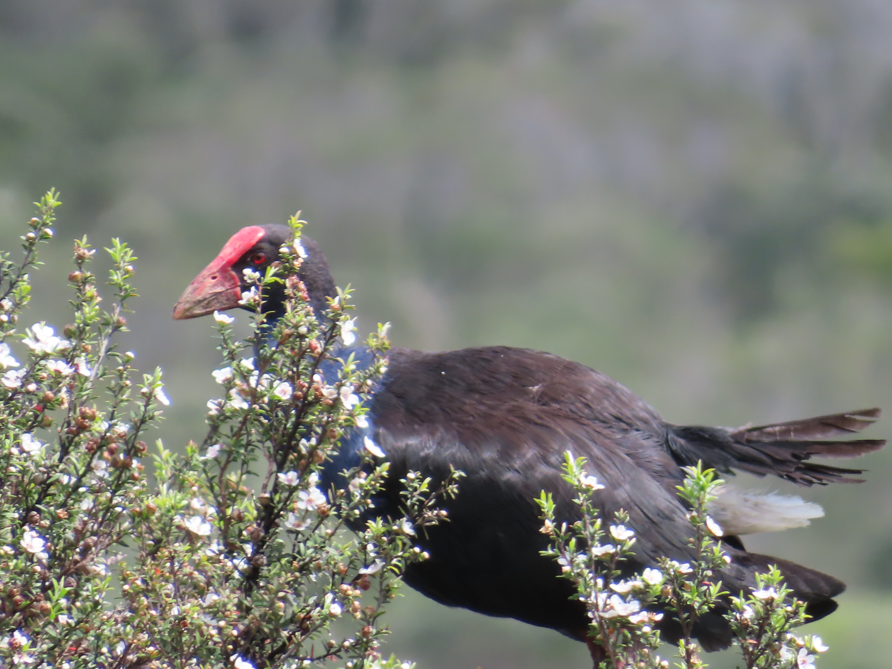
Pūkeko:
Seen throughout both North and South islands particularly in wetland ecosystems.
Prehistoric looking beaks. Unfortunately involved in road collisions often
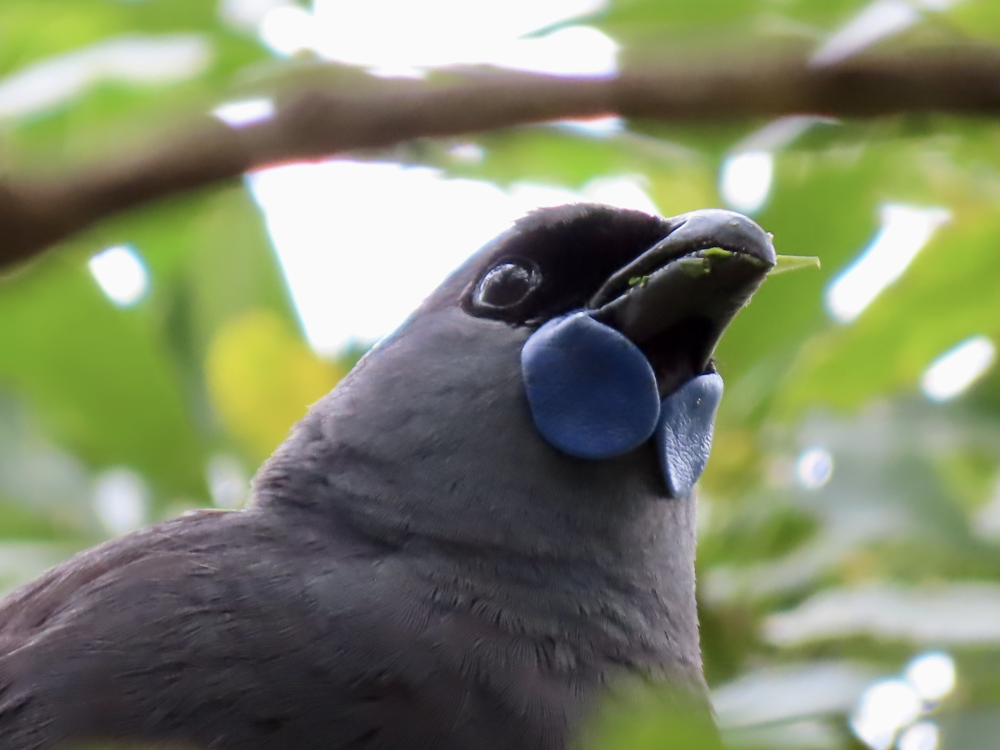
Kōkako:
Highly endangered and is the subject of robust conservation projects around the country
I was excited to see this rare bird happily eating on this conservation island
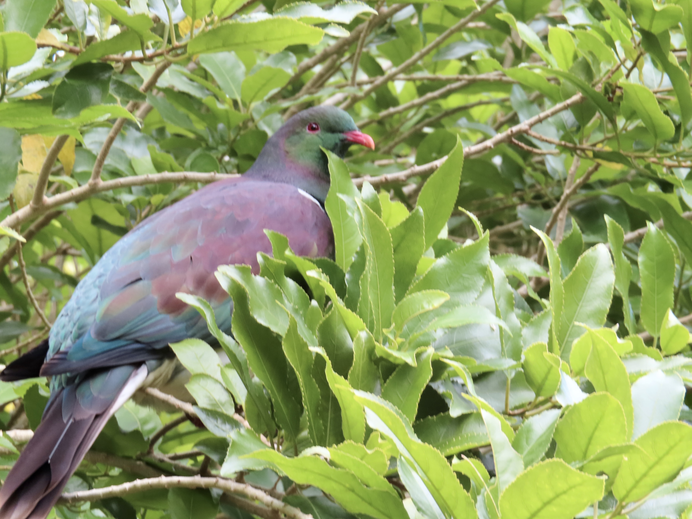
Kererū:
Endemic bird that was hunted heavily for human consumption.
Vertical spiral mating rituals and have amazing silhouettes in the evening
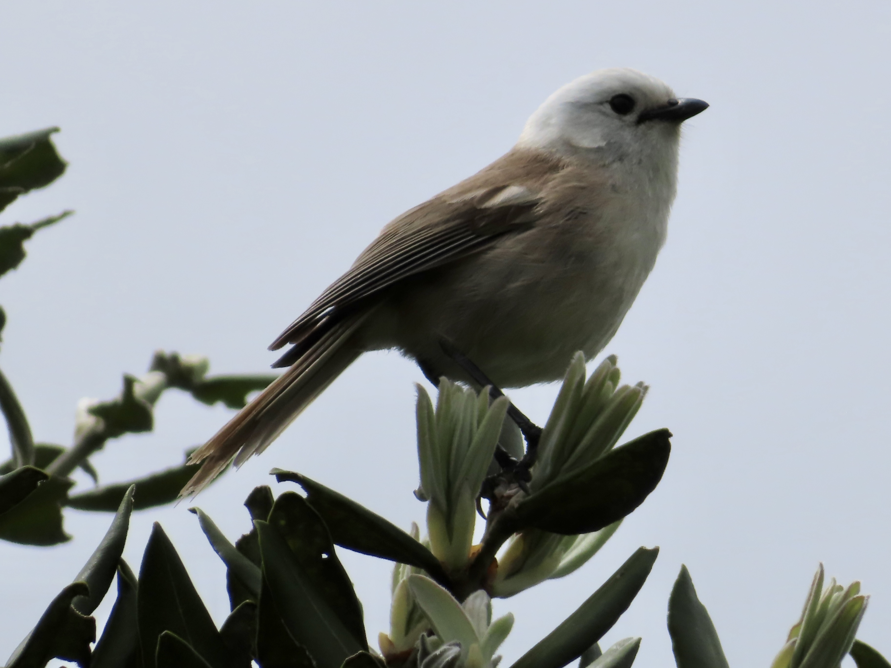
Pōpokotea (Whitehead):
Very Small specialized habitat for the Whitehead
Blended into the kānuka bush flowers
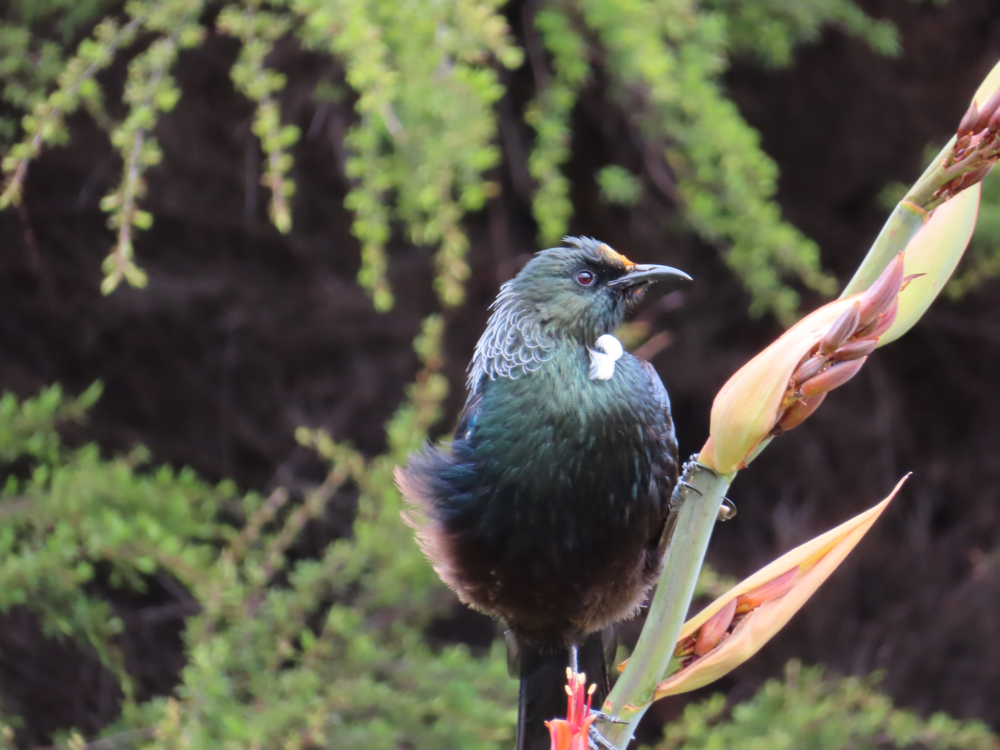
Tūī:
Seen everywhere and constantly singing
The orange on this tui is pollen stuck on the feathers near its beak
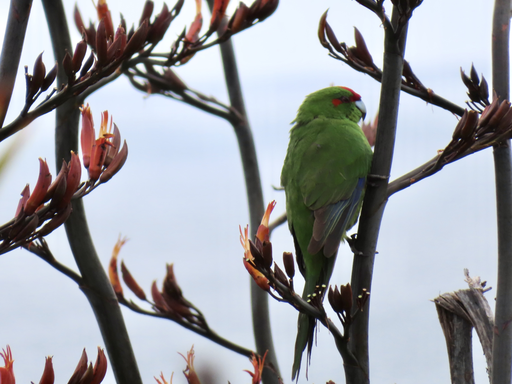
Kākāriki (Red-crowned Parakeet):
Captive breeding population seen on Tiritiri Matangi and waited for hours in the flax to photograph
Very chatty and amazing bright spectrum of colors as they fly.
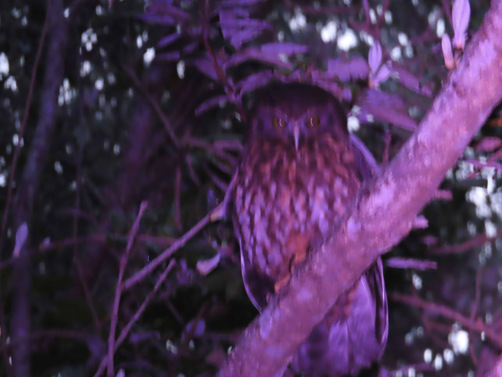
Ruru (morepork owl):
This owl is quite a compelling create and holds much spiritual power in New Zealand
This one was seen right along a trail looking to hunt
The two Endemic New Zealand Parrots:
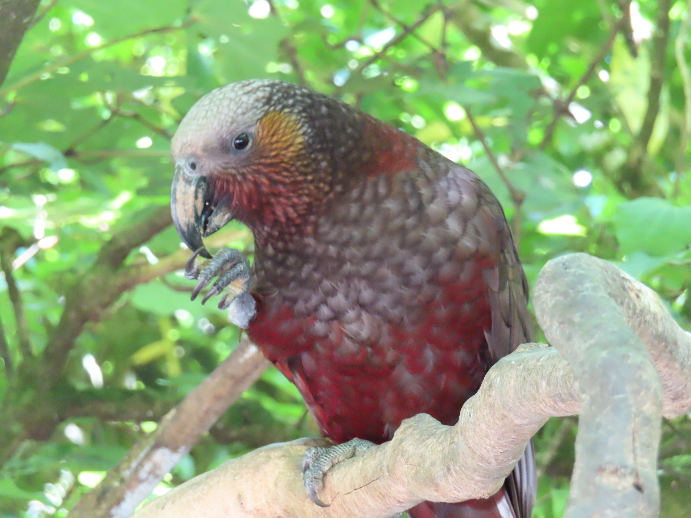
Kākā:
Seen in Zealandia Eco-Sanctuary cracking open large nuts
The population in Zealandia left one day and returned to the sanctuary with birds from Napier
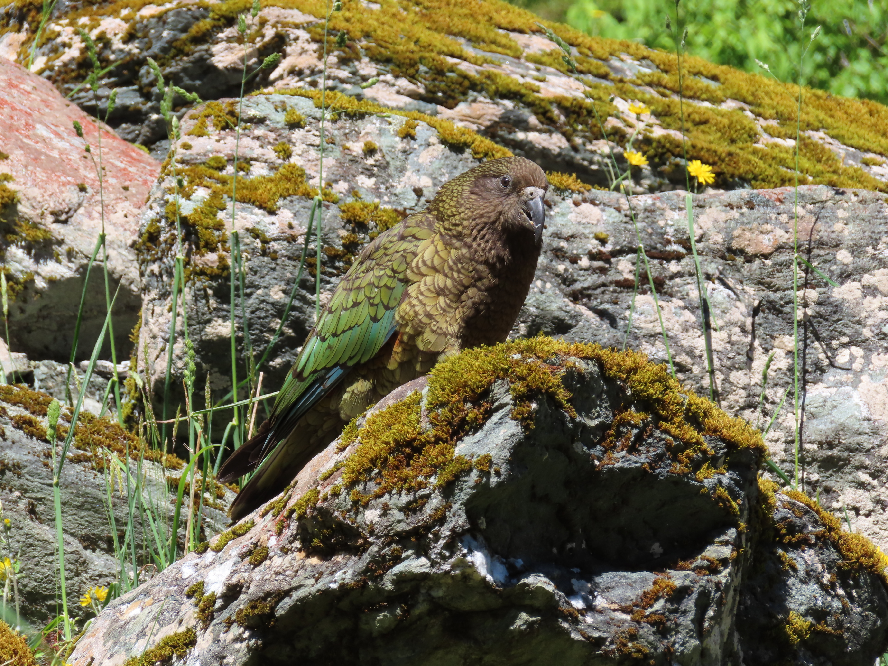
Kea:
The only alpine parrot in the world that is known for getting right into people’s windows
This photo doesn’t do the Kea justice since it hides the the red/orange feathers under its wings
Other Natives Seen throughout the Country:
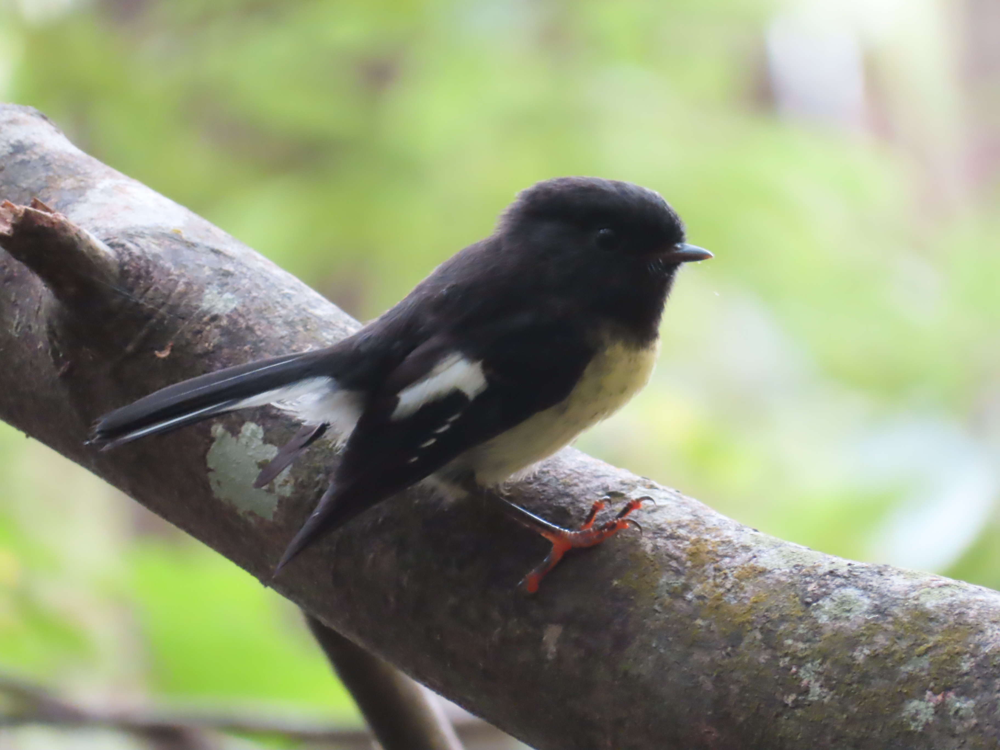
New Zealand tomtit:
Seen on a hike outside Dunedin and was not scared of people
Final version of this photo helped me learn many editing tools since the eye is invisible.
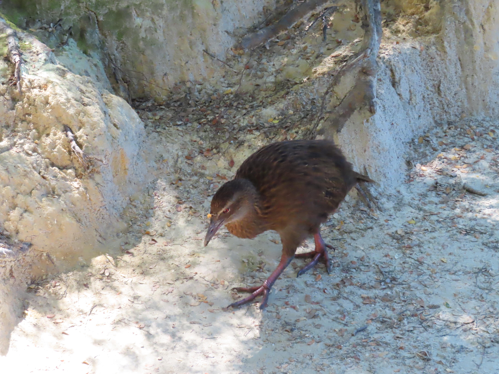
Weka:
Seen often around campsites these flightless birds will be quite bold
They are always mistaken as kiwis which is crazy to me
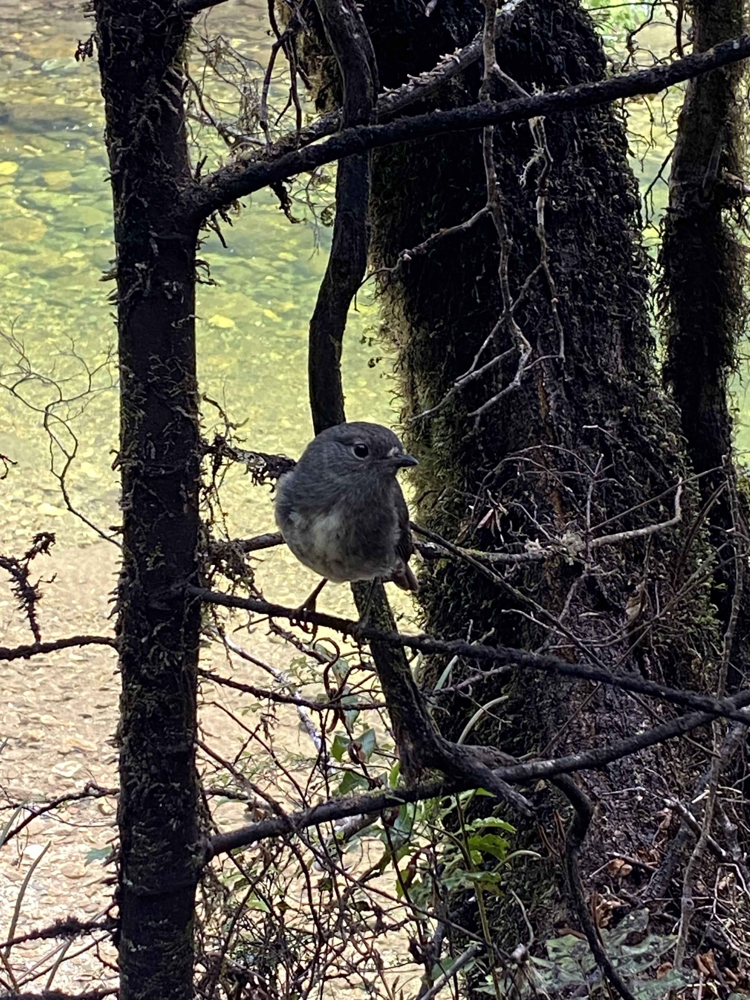
South Island Robin:
This species of bird was always interested in people especially in the back country
I think it used to follow around moa birds and eat the seeds they dropped
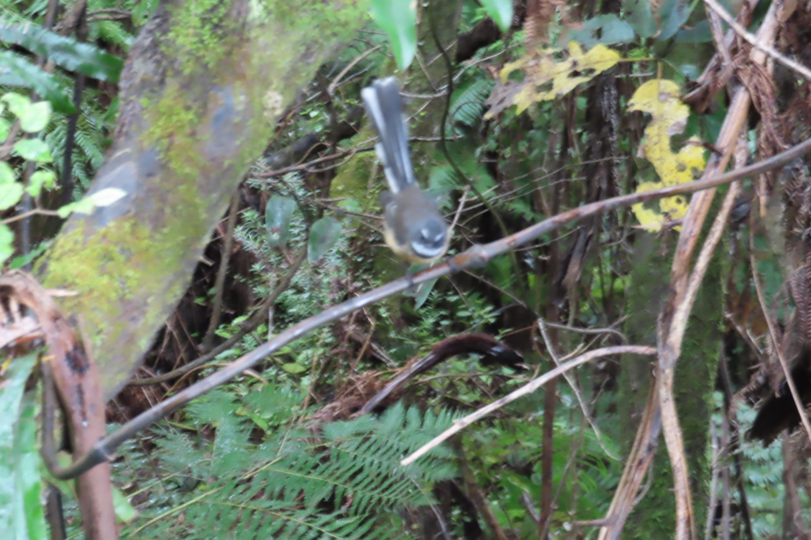